VSCode interactions
Overview
This page describes installation and usage of the Cloud Pipeline VSCode/Cursor extension.
This extension allows to use the following Cloud Pipeline functionality within your development environment:
- list your active compute runs
- start new instances from the available tools
- stop running instances
- open a run in a remote development window so you can work on the machine where the job is running
Installation
- Navigate to the CLI settings - Settings → CLI → VSCode extension:
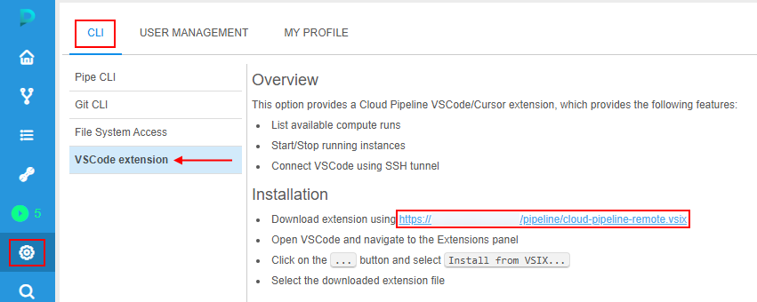
- Click download link provided within the settings page.
cloud-pipeline-remote.vsixextension installation file will be automatically downloaded to your local workstation. - Open VSCode or Cursor development application and open Extensions panel:
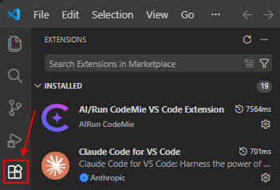
- Click More actions menu in the top-right corner and select Install from VSIX...
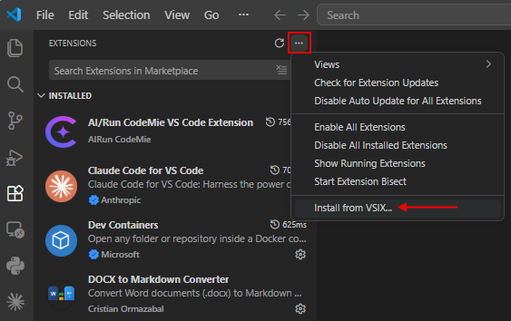
- Select
cloud-pipeline-remote.vsixfile, which was downloaded previously:
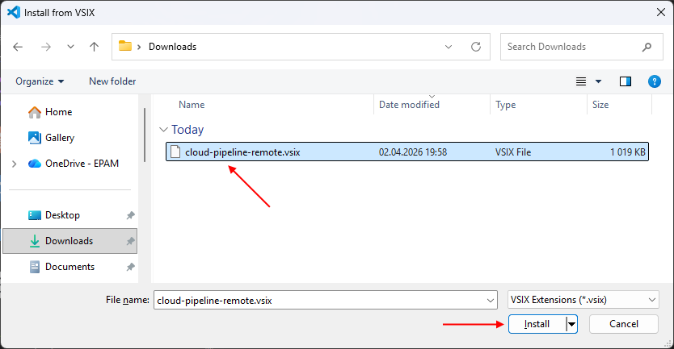
- Cloud Pipeline Remote extension will appear in the VSCode toolbar:
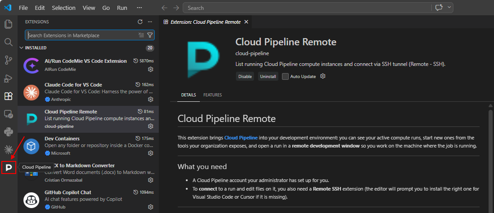
Authentication
Authentication flow uses the same approach as the Cloud Pipeline pipe CLI:
- If
pipeCLI was previously configured and used on a current workstation - its configuration and authentication token will be used.
In such case, no additional configuration is required for the VSCode extension. - If no
pipeCLI config is found - VSCode extension will prompt to sign-in:- click Cloud Pipeline Remote extension in the toolbar
- click Sign-in option:
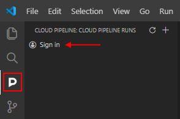
- VSCode will prompt for a permission to open web-browser, please approve:
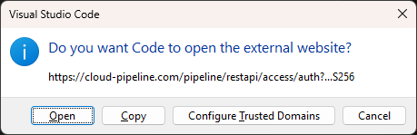
- A new browser window will be opened to perform authentication. If everything goes well - you will see a message about successful login:
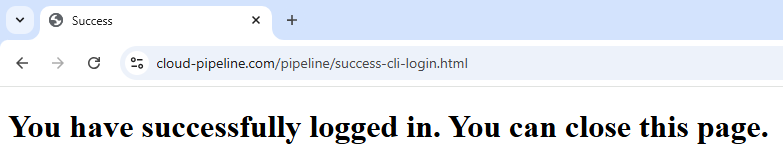
- At this point, Cloud Pipeline Remote extension is fully configured and ready to be used.
Operations
View a list of active runs
- By default, Cloud Pipeline Remote extension panel will show a list of currently active runs of a current user.
List of runs is auto-refreshed every 5 seconds:
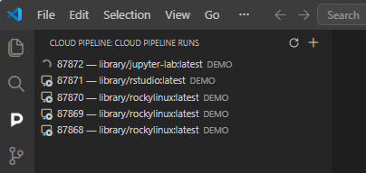
- Runs can be shown in two states:
- Starting - an instance is being initialized, connection can't be established yet.
- Ready - run is available for connection.
- Hover an instance with a mouse to see the run details:
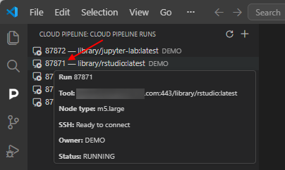
Connect to an instance
- Once an instance is ready for connection - double click it or right click and select Connect via SSH:
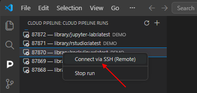
Please note, Cloud Pipeline VSCode extension depends on Microsoft Remote SSH plugin.
If it is not installed - you will be prompted to do so. Click Install Remote - SSH and wait for the installation to complete.
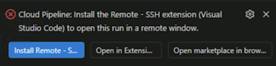
- This will open a new VScode window, which will start connecting to a selected instance.
If you will be prompted to select the platform for the remote host, selectLinux:
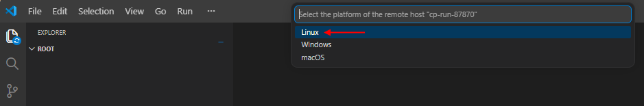
- Once connection is established - you will see a filesystem of the remote instance and be able to open terminal and execute code remotely:
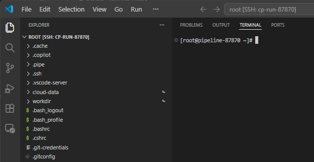
To stop connection to the instance - close VSCode window with opened remote connection and select Stop SSH Tunnel option from the context menu (right-click the instance):
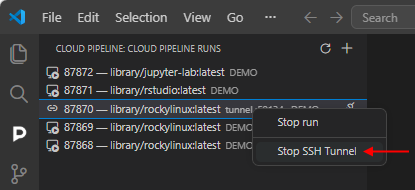
OR hover the instance in the list and click Stop SSH Tunnel icon:
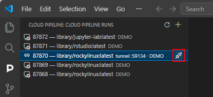
Start a new instance
Cloud Pipeline Remote extension also allows to start new runs right from the VSCode/Cursor IDEs:
- Click icon in the Cloud Pipeline Remote extension panel
- This will load a list of available tools. Note: it may take a couple of seconds to load.
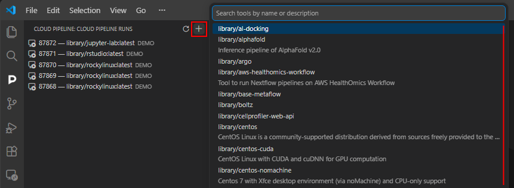
- Search and select a tool to start. This will bring a tool version selection menu:
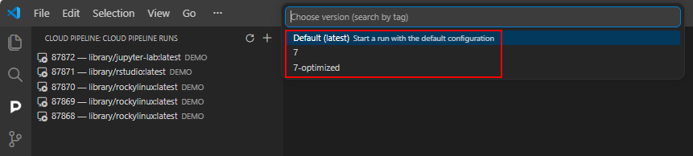
Cloud Pipeline Remote VSCode extension does not allow to define the tool startup configuration.
A default configuration, defined for that tool/version, will be used to start a new instance.
- Select a version to start a new run of the tool/version. A new instance will appear in the list of runs:
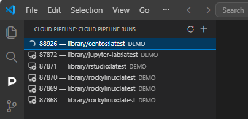
Stop an instance
Running instances can be stopped via Stop run option from the context menu (right-click the instance):
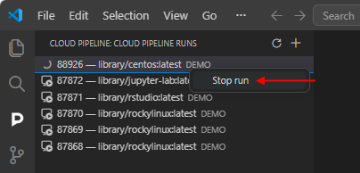
Confirm the stop in the appeared pop-up:
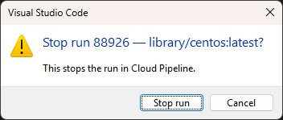